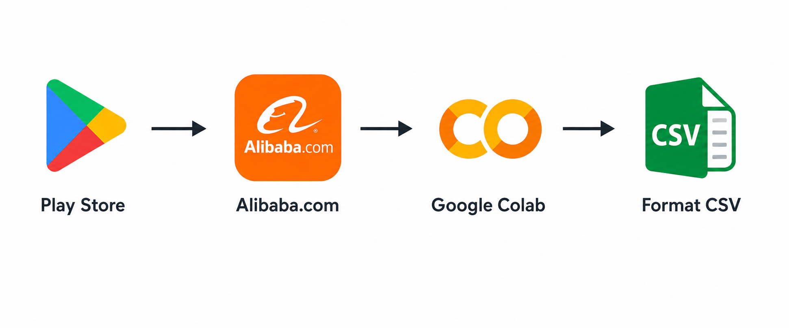

Menggunakan Metode Naïve Bayes pada Ulasan Google Play Store
Penelitian ini merupakan skripsi yang membahas analisis sentimen ulasan pengguna aplikasi Alibaba.com pada Google Play Store menggunakan metode Naïve Bayes.
Penelitian dilakukan untuk mengetahui sentimen pengguna terhadap aplikasi Alibaba.com berdasarkan ulasan yang diberikan.

Tahapan penelitian dilakukan melalui beberapa proses pengolahan data sebelum dilakukan klasifikasi menggunakan metode Naïve Bayes.
Mengumpulkan ulasan pengguna aplikasi Alibaba.com dari Google Play Store.
Membersihkan data dari karakter dan elemen yang tidak diperlukan.
Memecah teks ulasan menjadi token atau kata.
Mengubah teks menjadi bentuk huruf kecil.
Menghilangkan stopword dan melakukan penyaringan token sesuai proses preprocessing.
Melakukan pembobotan kata menggunakan metode TF-IDF sebelum proses klasifikasi.
Melakukan klasifikasi sentimen menggunakan metode Naïve Bayes.
Dataset penelitian terdiri dari 998 ulasan pengguna aplikasi Alibaba.com yang diperoleh dari Google Play Store.
Berdasarkan hasil pengujian menggunakan metode Naïve Bayes, diperoleh hasil evaluasi sebagai berikut:
Hasil penelitian menunjukkan bahwa metode Naïve Bayes dapat digunakan untuk melakukan klasifikasi sentimen pada ulasan pengguna aplikasi Alibaba.com.
Berdasarkan pengujian yang dilakukan, model memperoleh accuracy sebesar 77,44%, precision sebesar 83,39%, dan recall sebesar 85,16%.